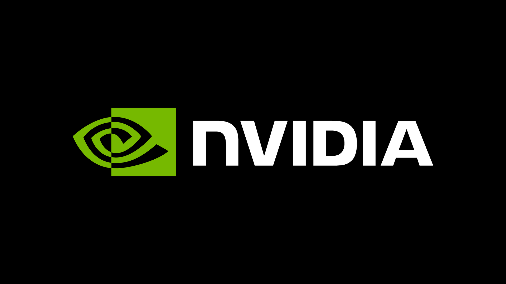
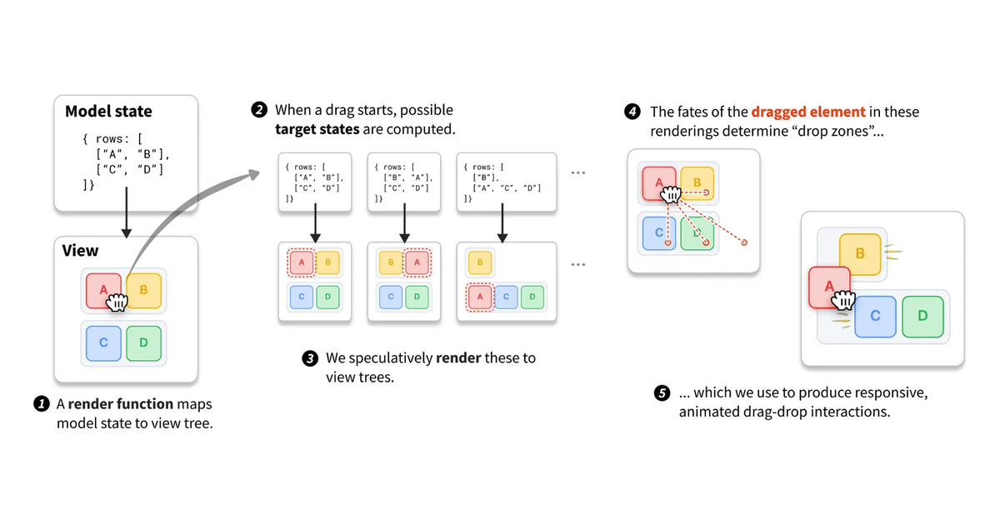
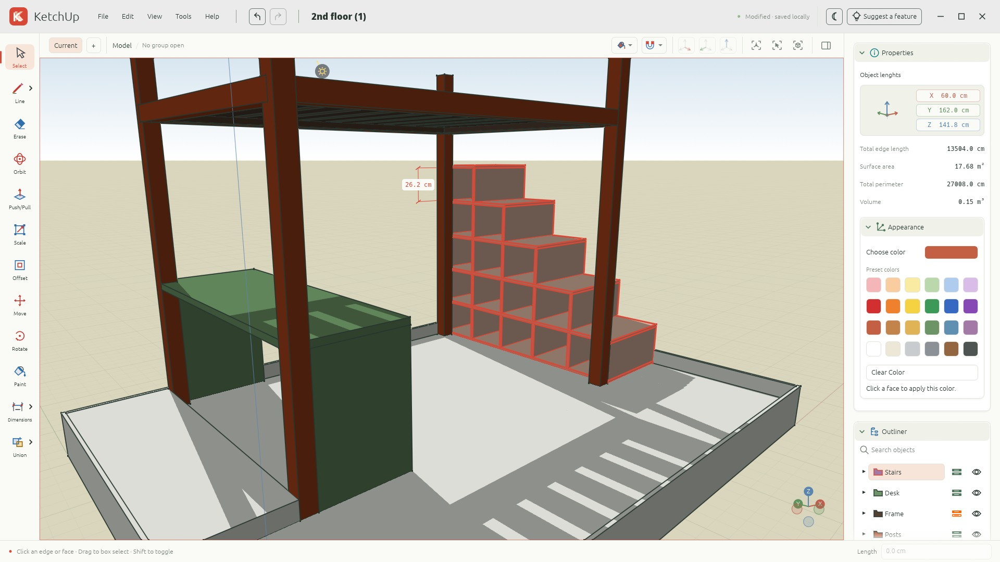
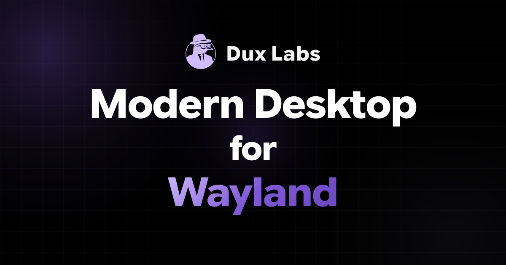

SANTA CLARA — Nvidia Chief Executive Jensen Huang sent a company-wide email acknowledging an extramarital affair and apologizing to his family and colleagues, weeks after reports surfaced that a woman alleged to be a Chinese spy forged a relationship with him to gather corporate secrets. The internal letter, which appeared on Nvidia's public newsroom site, states: "I was unfaithful to my wife. My actions hurt her and our children. There is no excuse for what I did."
The New York Times and CNN have reported that the woman, arrested in late 2025, claimed to federal investigators that her romantic relationship with Huang was part of a Chinese intelligence operation targeting the United States' leading chipmaker. Nvidia's stock fell 2% in pre-market trading following the letter's release[12].

A new programming environment demonstrates drag-and-drop interfaces where every gesture is a reversible operation, with interactive demos showing visual representations of refactorings and code paths. The project's "twisted tree diagrams" display tangled code paths in a way several commenters called "revolutionary" and "genuinely educational"[13].
One commenter compared the approach to Hazel, noting the potential for explaining refactorings to new programmers. Another welcomed the work on improving a UI pattern that has remained largely unchanged for decades[14].

A free 3D modeling application for woodworking and furniture design, built with Rust and WebGPU, offers Windows, macOS, Linux and browser versions. The app, which styles itself as a SketchUp alternative, lets users plan shelves, tables, cabinets and workbenches with exact measurements before building[16].
Early testers noted the Rust-based UI's responsiveness, though one user flagged that drawing rectangles prompts for object names by default[17]. Commenters pointed out the name's proximity to Autodesk's trademarked brand[18].

Microsoft's consumer email service Outlook.com began silently rejecting email from domains that don't publish a DMARC record on November 5, without announcement. A system administrator reported that domains with valid SPF and DKIM signatures started bouncing over the weekend[21]. DMARC is the third authentication protocol in the anti-phishing trifecta.
Commenters debated whether an unannounced cutoff was the right approach for such a distributed system with plenty of self-managed and legacy infrastructure[22]. One affected user noted their domain had a p=quarantine DMARC entry—more restrictive than none—yet still experienced rejections[23].
A project wrapping llama.cpp claims to run the 284-billion-parameter DeepSeek model on a 64GB RAM machine without a GPU, through extreme 2-bit quantization. The README describes making AI decision models up to 9.5x faster than vLLM and SGLang through hardware-specific optimizations[25].
Commenters questioned the output quality at 2-bit quantization, with one labeling the README's AI-generated style "obnoxious"[26]. Antirez noted that with 128GB unified RAM the same model can run "fast" including for coding-agent use, showing prefill speeds near 300 tokens per second[27].
MURAT BUFFALO — An essay argues that writing is not merely communication but a process of discovering what one actually thinks, with scientific papers emerging as much from the drafting phase as from the laboratory work. A doctoral student recounted how many times they only discovered what they were "actually researching" during the writing portion, not before[29].
One commenter noted that scribbling diagrams on paper is often a prerequisite for coding, because getting thoughts down externally makes them more memorable[30]. Another pointed to what the article calls the danger of AI-assisted writing: it makes people believe writing is just writing, not "a tool for thinking very deeply"[31].
A security researcher who bought a vehicle from an unnamed manufacturer in 2023 disclosed vulnerabilities in the company's connected car platform that allow remote unlocking across most markets. The article, which refers to the automaker only as "the auto," showcases what appear to be successful remote unlock operations worldwide[9].
Commenters quickly identified the manufacturer as Hyundai based on timing and context[10]. The researcher collaborated with Sam Curry, whose prior work includes exposing similar connected-car vulnerabilities at other manufacturers.
Dux, a free and open-source Wayland desktop shell called DMS, has reached version 2.1 "Stormborn." The release adds a system monitor, video wallpapers, a revamped media player, interface density controls and numerous file manager enhancements[33]. The project's design language drew comparisons to ChromeOS from some commenters[34].
One user plans to switch from a cobbled-together Sway and Gnome setup, while another noted DMS is becoming "more all-encompassing than I honestly want"[35]. A commenter linked to Triad, a River-based compositor that supports DMS[36].

"Complexity in prose is usually a place to hide sloppy thinking, or a way to weasel out of taking a stance. If you can't say it plainly, you probably haven't thought it through yet."[31]
| Fresh stories | 10 |
| Follow-ups | 0 |
| Carried in digest | 0 |
| Combined points | 4,782 |
| Combined comments | 2,867 |
An analysis argues that while AI companies have committed or spent at least $5 trillion on data centers—mostly one-time capital expenditures—the valuations may be justified if the rollout succeeds and spending normalizes. The author notes that GPU costs, not buildings, dominate the spend, suggesting investment amortization over 5-6 years rather than two decades[38].
Commenters countered that Meta's margins are being crushed by AI investments and that Anthropic's rumored $1.2 trillion valuation appears divorced from any clear path to positive cash flow[39]. Another noted that successful technology (the internet) coexisted with wildly wrong valuations during the dotcom bubble—Cisco survived while Pets.com did not[40].
Opus 5.5 behavior: The title "Is Opus 5.5 nerfed?" implies an official downgrade. One commenter noted the change may be a new summarizer rather than the underlying model; Anthropic has not confirmed what changed on November 3[41].
Car vulnerability title: The article's elliptical headline ("Unlocking any car from X brand in most of the world") clarifies to a single major automaker—Hyundai, per threads—not all vehicles worldwide[42].
DMARC cutoff: The Outlook.com policy change began November 5, but some domains with p=quarantine—a more restrictive DMARC policy than none—also experienced rejections, suggesting the criteria may not be purely presence/absence[43].
Nvidia's CEO admits to an affair as a federal probe into alleged Chinese spy influence continues; Outlook.com silently rejects email without DMARC; a researcher shows remote unlock vulnerabilities affecting major automaker vehicles; users report unexplained behavior changes in Anthropic's Opus 5.5 model; a free Rust-based 3D modeling app launches.
The lead story concerns Nvidia Chief Executive Jensen Huang's internal apology for an affair, linked to an ongoing federal investigation into alleged Chinese espionage. With no follow-ups in this edition, all ten stories are fresh from today's front page.
— The Herald